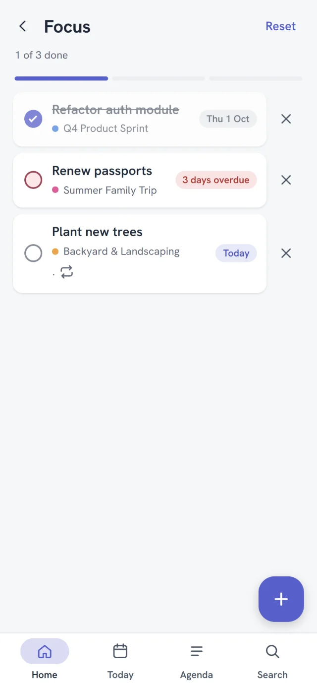

Board, List or Agenda
Drag tasks between statuses, sort a dense list, or see the month at a glance. Same tasks, three ways to look.

Off the cloud, still logged
Plan on a Board, a List or an Agenda. Pick today's three. Your phone and PC stay in sync over your own Wi-Fi, with no account and no server in between.
What's inside
Plan the way you think, pick what matters today, and keep going without a signal.
Drag tasks between statuses, sort a dense list, or see the month at a glance. Same tasks, three ways to look.
Pick up to three tasks for the day. Offlog suggests the overdue and the pinned first.

"Call plumber tomorrow 5pm !high" becomes a task with a date, a time and a priority.

Undo everything. Deleted tasks wait in the Recycle bin, and History keeps every change.

A PIN, your fingerprint or face, and a recovery code only you keep.
Checklists, colored tags, your own fields, and files up to 10 MB on any task.
Seven automatic backups kept, plus export and import whenever you like.
Sync
The Windows app is your own private sync point. Pair once, and every change travels straight between your devices on your Wi-Fi.
The PC app keeps a full copy and hosts the sync.
Settings → Sync → Generate a code. Six digits, five minutes.
Settings → Sync → Find my computer. Paired for good.
Privacy
No account, no analytics, no telemetry, no ads. Your tasks live on your devices, and the code is open for anyone to check.
Open the app and start. Nothing to sign up for or forget.
Sync runs on your PC. We couldn't read your tasks if we tried.
Not in the app, and not on this website either.
Read every line on GitHub, build it yourself, keep it forever.
The full privacy policy, in plain words: docs/privacy.md
Download
Use either on its own, or both together. Free, with every feature, always.
Windows 10 and 11
Android 7.0 or newer
Google Play listing is on its way. Windows shows a warning before installing because the installer isn't code-signed yet; updates are still signature-checked. No iOS or Mac version.
Questions
Yes. Every feature, on every device, with no paywall, no ads and no trial. Offlog is open source under the MIT license.
Only to sync. The phone app and the PC app each work fully on their own. To keep them in step, the Windows app acts as the sync point, so two phones without a PC can't sync with each other.
No, and that's on purpose. Your devices sync when they're on the same network. Everything still works offline in the meantime, and catches up the next time they meet.
Your tasks are also on your PC if you sync, and Offlog keeps seven daily backups you can export or restore. App Lock keeps a lost phone's tasks private.
The installer isn't code-signed yet, which costs money every year. Click "More info", then "Run anyway". The app's own updates are checked against a signature before they install.